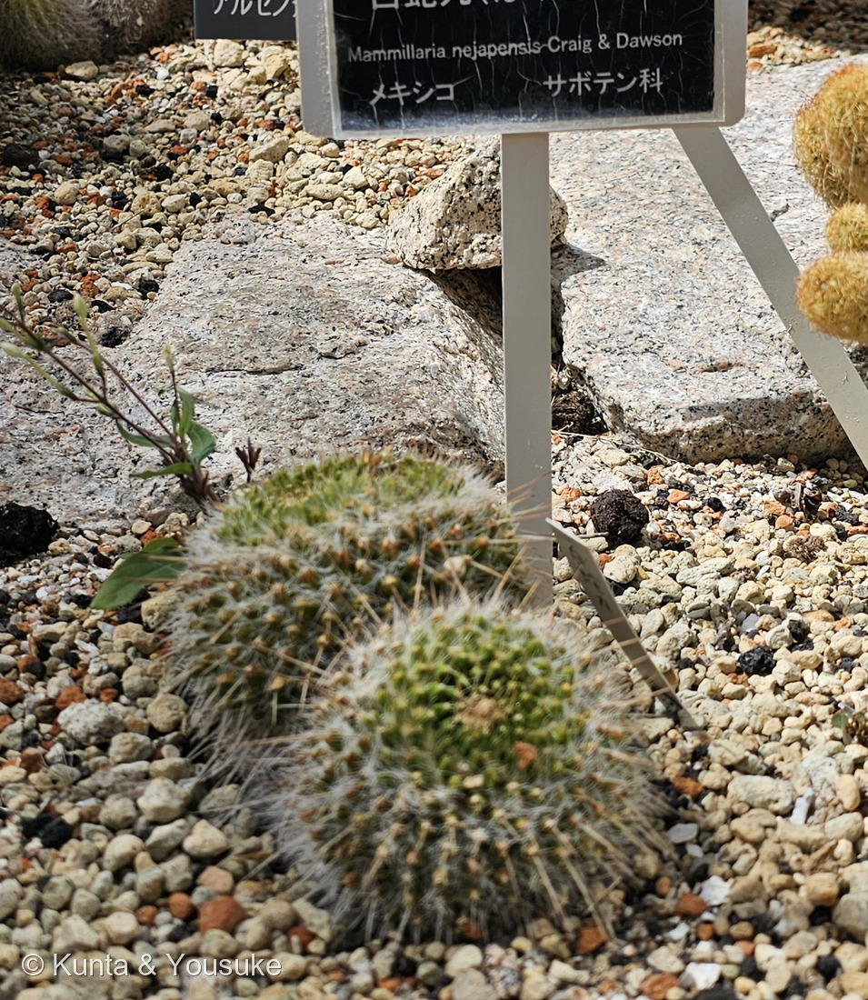

地図を読み込んでいるよ…
🔍 写真も地図も、押しているあいだ拡大して見られるよ（スマホは指を置いてすこし待ってね）。
🌍 の地図＝この子がもともと自生している場所を緑に。メキシコ南部（オアハカ州）。標高850〜1,650mの、熱帯落葉樹林と乾燥低木林。くわしくは下の地図の説明を見てね。
⭐メキシコだけの子だよ。⚠実際にいるのは南部のオアハカ州のごく一角――LLIFLE は「From Oaxaca city, towards Totalapan, in the NW area around Nejapa」「850 - 1.650 metres above sea level」とする。⭐⭐種小名 nejapensis は、その「ネハパ（Nejapa）」という土地の名前そのもの＝この地図の一点が、そのまま名前になっている。⭐⭐⭐そして環境が三兄弟の中でいちばんちがう＝「tropical deciduous forest and xerophyllous scrub」＝熱帯の落葉樹林と乾燥低木林――242 シラボシの「石灰岩の崖」とは、まるでちがう場所だね。⭐ぼくらが会ったのは温室だから、この緑の外だよ。
⚠ 地図は国（日本と中国だけ県・省）までしか塗れないから、ほんとうの分布より広く見えていることがあるよ。地図はだいたいの場所。正確なところは、上の文を見てね。
ハクダマル（白蛇丸）
Mammillaria nejapensis Craig & Dawson
別名 シルバーアローズ（Silver Arrows・銀の矢）／アウルアイズ（Owl Eyes・ふくろうの目） 原産 メキシコ南部（オアハカ州）・標高850〜1,650m
サボテン科 · Cactaceae（マミラリア属 Mammillaria・ナデシコ目 Caryophyllales）── ⭐図鑑で5人目のサボテン科／⭐⭐マミラリア属では3人目（242・243と同じ日・同じ温室）／⚠科は増えないので97科のまま
燻太さんの一言「日本原産ではないから、メキシコでどういう立ち位置なのか、現地の環境との関係もあわせて紹介できるといいね。」── ⭐⭐⭐三人ならべたら、メキシコを北東から南へ縦にたどれたよ
⭐ 名前と学名の由来 ── 地名が、そのまま種の名前に
この植物のこと ── オアハカの、落葉樹林と乾いた低木林
- ⭐自生地は「From Oaxaca city, towards Totalapan, in the NW area around Nejapa」、標高「850 - 1,650 metres」（LLIFLE）。
- ⭐⭐そして環境がおもしろい＝「tropical deciduous forest and xerophyllous scrub」＝熱帯の落葉樹林と、乾燥低木林。⚠242 シラボシの「石灰岩の崖」とはずいぶんちがう。⭐同じ属でも、住みかは属の中でこんなに幅がある。
- ⭐体は「Globose to short cylindrical ... blue-green to dark green, to 15 cm high and 5 - 7.5 in diameter」。⭐写真①の青みがかった緑が、それだよ。
- ⭐刺は「ivory with reddish-brown tips, becoming chalky white with age」＝はじめは象牙色で先が赤褐色、⭐年をとると白墨のような白になる。⭐長さは上のほうで2〜5mm、下のほうでは25〜50mm以上。
- ⭐疣の腋は「very woolly with many tortuous bristles」＝綿だらけで、くねくねした剛毛がたくさん。
- ⭐花は「Diurnal, funnel-form, 18 mm long, 10 mm in diameter, pale cream with red-brown to scarlet midstripe」＝昼に開く、クリーム色に赤いすじ。
⭐⭐⭐ この子だけの技 ── 茎が、まっぷたつに分かれる
- ⭐⭐「Each single stem begins to divide dichotomously to form two stems」（LLIFLE）＝1本の茎が、先で二又に分かれて2本になる。⭐それをくり返して、大きな群れになる。
- ⭐⭐ふつうサボテンは、わきから子をふいて増える（243 ハクジンマルがそうだね）。⚠この子は、そうではなく自分自身が二つに割れる。
- ⭐⭐⭐「Dichotomous branching is not a common occurrence in cacti in general, but it happens for some reason in this particular subspecies」＝⚠なぜそうなるのかは、ぼくが読めた出典には書かれていない。⭐出典自身も「for some reason（なぜだか）」としか言っていないんだ。
- ⏳⭐写真①には球が2つならんでいる。⚠これが「二又に分かれたあと」なのか、別々の株なのかは、根もとが写っていないので分からない。⭐次に会ったら、そこを見よう。
⚠⚠ 名前が、いまも動いている
- ⚠この子の学名の扱いは割れている。――独立種 Mammillaria nejapensis Craig & Dawson とする立場（園の名札はこちら）と、Mammillaria karwinskiana の亜種（subsp. nejapensis）とする立場がある。
- ⭐ここでは名札にしたがったうえで、割れていることも書いておくことにした。⚠どちらかが「まちがい」なのではなくて、どこで線を引くかの考えかたがちがうんだ。
- ⭐⭐238 カジノキのコウゾ属もそうだったね――⭐名前は決まりきったものに見えて、いまも動いている場所がある。
参考＝LLIFLE・Mammillaria nejapensis（「From Oaxaca city, towards Totalapan, in the NW area around Nejapa」「850 - 1.650 metres above sea level」「tropical deciduous forest and xerophyllous scrub」「Each single stem begins to divide dichotomously to form two stems」「Globose to short cylindrical, somewhat wider in the upper part, blue-green to dark green, to 15 cm high and 5 - 7.5 in diameter」「ivory with reddish-brown tips, becoming chalky white with age」「the axil is very woolly with many tortuous bristles」「Diurnal, funnel-form, 18 mm long, 10 mm in diameter, pale cream with red-brown to scarlet midstripe」／分類＝Mammillaria karwinskiana subs. nejapensis として扱う）／World of Succulents・Mammillaria karwinskiana subsp. nejapensis（英名 Silver Arrows／「Dichotomous branching is not a common occurrence in cacti in general, but it happens for some reason in this particular subspecies」）／OPTE 東海園芸・マミラリア（「ほとんどのサボテンは刺座から花が咲くのに対し、この属の花はイボとイボの間から咲きます」）／広島市植物公園の園名札